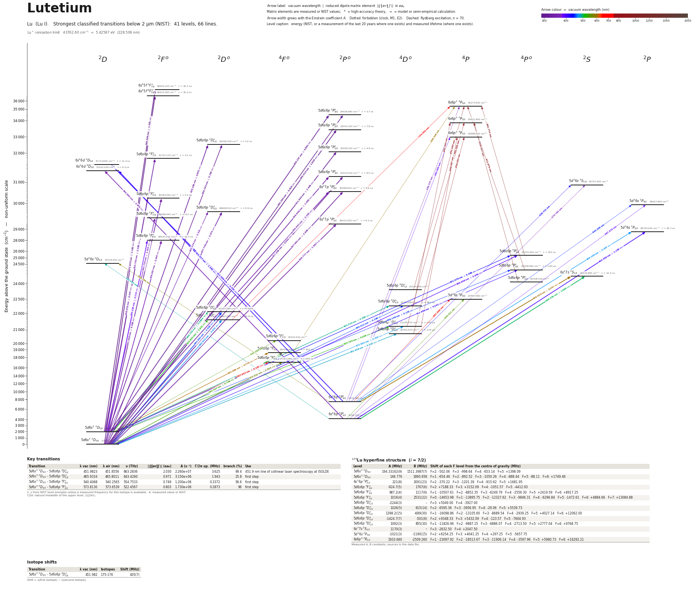

Lutetium energy level diagram
Energy levels and transitions of neutral lutetium (Lu I): the 66 strongest classified lines below 2 µm from the NIST Atomic Spectra Database and the 41 levels they connect, each line with its vacuum wavelength, frequency and, for 45 of them, the reduced dipole matrix element derived from the NIST transition rate. Measured lifetimes, transition rates, hyperfine constants and isotope shifts from the literature are included, each with its citation.
Hover a line or a level to isolate it, click to keep it selected. Scroll to zoom, drag to move.

Download: diagram (PDF) diagram (SVG) transitions (CSV) levels (CSV) source code

Key transitions of lutetium
| Transition | λ vac (nm) | λ air (nm) | ν (THz) | |⟨J‖er‖J′⟩| (ea₀) | A (s⁻¹) | Γ/2π up. (MHz) | branch (%) | Use |
|---|---|---|---|---|---|---|---|---|
| 5d6s2 2D3/2 – 5d6s6p 2D°3/2 | 451.9823 | 451.8556 | 663.2836 | 2.030 | 2.260e+07 | 3.625 | 99.4 | 451.9 nm line of collinear laser spectroscopy at ISOLDE |
| 5d6s2 2D3/2 – 5d6s6p 2D°5/2 | 465.9316 | 465.8011 | 643.4260 | 0.971 | 3.150e+06 | 1.943 | 25.8 | first step |
| 5d6s2 2D3/2 – 5d6s6p 4F°5/2 | 540.4068 | 540.2565 | 554.7533 | 0.749 | 1.200e+06 | 0.3372 | 56.6 | first step |
| 5d6s2 2D3/2 – 5d6s6p 4F°3/2 | 573.8130 | 573.6539 | 522.4567 | 0.803 | 1.730e+06 | 0.2873 | 96 | first step |
λ, ν from NIST level energies unless a measured frequency for this isotope is available. A: measured value or NIST. Γ/2π: natural linewidth of the upper level, 1/(2πτ).
175Lu hyperfine structure (I = 7/2)
| Level | A (MHz) | B (MHz) | Shift of each F level from the centre of gravity (MHz) |
|---|---|---|---|
| 5d6s2 2D3/2 | 194.33162(9) | 1511.3987(7) | F=2: -502.06 F=3: -998.64 F=4: -653.14 F=5: +1398.09 |
| 5d6s2 2D5/2 | 146.776 | 1860.656 | F=1: -654.46 F=2: -892.52 F=3: -1050.26 F=4: -888.44 F=5: -88.11 F=6: +1749.46 |
| 6s26p 2P°3/2 | 221(8) | 2091(23) | F=2: -370.22 F=3: -1201.39 F=4: -915.62 F=5: +1681.95 |
| 5d6s6p 4F°3/2 | -924.7(5) | 1767(6) | F=2: +7188.33 F=3: +3152.09 F=4: -1051.57 F=5: -4412.93 |
| 5d6s6p 4F°5/2 | 987.2(4) | 1117(6) | F=1: -10507.61 F=2: -8852.35 F=3: -6249.79 F=4: -2556.30 F=5: +2419.59 F=6: +8917.25 |
| 5d6s6p 4F°7/2 | 1016(4) | 2531(22) | F=0: -14653.98 F=1: -13895.75 F=2: -12327.62 F=3: -9846.31 F=4: -6296.84 F=5: -1472.61 F=6: +4884.66 F=7: +13084.88 |
| 5d6s6p 4D°1/2 | -2244(3) | – | F=3: +5049.00 F=4: -3927.00 |
| 5d6s6p 4D°3/2 | 1026(5) | 615(14) | F=2: -6595.36 F=3: -3956.95 F=4: -29.06 F=5: +5539.73 |
| 5d6s6p 2D°5/2 | 1398.2(15) | -689(30) | F=1: -16098.86 F=2: -13105.60 F=3: -8689.54 F=4: -2939.25 F=5: +4027.14 F=6: +12062.00 |
| 5d6s6p 2D°3/2 | -1424.7(7) | -501(6) | F=2: +9348.33 F=3: +5432.09 F=4: -123.57 F=5: -7604.93 |
| 5d6s6p 4D°5/2 | 1092(3) | 855(30) | F=1: -11826.96 F=2: -9887.25 F=3: -6886.07 F=4: -2713.50 F=5: +2777.04 F=6: +9768.75 |
| 6s27s 2S1/2 | 1170(3) | – | F=3: -2632.50 F=4: +2047.50 |
| 5d26s 2P3/2 | -1021(3) | -1190(15) | F=2: +6254.25 F=3: +4041.25 F=4: +297.25 F=5: -5657.75 |
| 6s6p2 4P5/2 | 1933.660 | -2509.260 | F=1: -23097.92 F=2: -18513.67 F=3: -11906.14 F=4: -3597.96 F=5: +5980.73 F=6: +16292.21 |
Measured A, B constants; sources in the data file.
Isotope shifts
| Transition | λ vac (nm) | Isotopes | Shift (MHz) |
|---|---|---|---|
| 5d6s2 2D3/2 – 5d6s6p 2D°3/2 | 451.982 | 175-176 | 435(7) |
Shift = ν(first isotope) − ν(second isotope).
Listed Lu transitions below 2 µm
| Lower level | Upper level | λ vacuum (nm) | λ air (nm) | ν (THz) | Type | |⟨J‖er‖J′⟩| (ea₀) | A (s⁻¹) | Branching (%) | Source of matrix element / A |
|---|---|---|---|---|---|---|---|---|---|
| 5d6s2 2D3/2 | 6s25f 2F°5/2 | 272.9752 | 272.8944 | 1098.2405 | E1 | 1.182 measured | 2.320e+07 measured | 70 | Fedchak, Den Hartog, Lawler, Palmeri, Quinet, Biémont, Astrophys. J. 542, 1109 (2000), Ta… |
| 5d6s2 2D5/2 | 6s25f 2F°7/2 | 288.5986 | 288.5140 | 1038.7869 | E1 | 1.481 measured | 2.310e+07 measured | 70 | Fedchak, Den Hartog, Lawler, Palmeri, Quinet, Biémont, Astrophys. J. 542, 1109 (2000), Ta… |
| 5d6s2 2D3/2 | 5d6s6p 2P°3/2 | 290.3896 | 290.3046 | 1032.3800 | E1 | 0.618 measured | 7.900e+06 measured | 2.92 | Fedchak, Den Hartog, Lawler, Palmeri, Quinet, Biémont, Astrophys. J. 542, 1109 (2000), Ta… |
| 5d6s2 2D3/2 | 5d6s6p 2P°1/2 | 299.0153 | 298.9281 | 1002.5989 | E1 | 1.838 measured | 1.280e+08 measured | 99.5 | Fedchak, Den Hartog, Lawler, Palmeri, Quinet, Biémont, Astrophys. J. 542, 1109 (2000), Ta… |
| 5d6s2 2D3/2 | 5d6s6p 2D°5/2 | 308.1028 | 308.0133 | 973.0274 | E1 | 0.790 measured | 7.200e+06 measured | 2.29 | Fedchak, Den Hartog, Lawler, Palmeri, Quinet, Biémont, Astrophys. J. 542, 1109 (2000), Ta… |
| 5d6s2 2D5/2 | 5d6s6p 2P°3/2 | 308.2370 | 308.1475 | 972.6038 | E1 | 3.892 measured | 2.620e+08 measured | 97.1 | Fedchak, Den Hartog, Lawler, Palmeri, Quinet, Biémont, Astrophys. J. 542, 1109 (2000), Ta… |
| 5d6s2 2D3/2 | 5d6s6p 2P°1/2 | 311.9336 | 311.8432 | 961.0777 | E1 | 2.466 measured | 2.030e+08 measured | 99.5 | Fedchak, Den Hartog, Lawler, Palmeri, Quinet, Biémont, Astrophys. J. 542, 1109 (2000), Ta… |
| 5d6s2 2D3/2 | 5d6s6p 2P°3/2 | 317.2284 | 317.1366 | 945.0367 | E1 | 2.040 measured | 6.600e+07 measured | 56.2 | Fedchak, Den Hartog, Lawler, Palmeri, Quinet, Biémont, Astrophys. J. 542, 1109 (2000), Ta… |
| 5d6s2 2D3/2 | 6s27p 2P°3/2 | 327.9912 | 327.8967 | 914.0258 | E1 | 2.639 measured | 1.000e+08 measured | 59 | Fedchak, Den Hartog, Lawler, Palmeri, Quinet, Biémont, Astrophys. J. 542, 1109 (2000), Ta… |
| 5d6s2 2D5/2 | 5d6s6p 2D°5/2 | 328.2694 | 328.1749 | 913.2512 | E1 | 5.652 measured | 3.050e+08 measured | 97.6 | Fedchak, Den Hartog, Lawler, Palmeri, Quinet, Biémont, Astrophys. J. 542, 1109 (2000), Ta… |
| 5d6s2 2D3/2 | 5d6s6p 2F°5/2 | 331.3063 | 331.2110 | 904.8801 | E1 | 4.463 measured | 1.850e+08 measured | 98.1 | Fedchak, Den Hartog, Lawler, Palmeri, Quinet, Biémont, Astrophys. J. 542, 1109 (2000), Ta… |
| 5d6s2 2D5/2 | 5d6s6p 2F°7/2 | 336.0526 | 335.9560 | 892.0999 | E1 | 6.047 measured | 2.440e+08 measured | 99.9 | Fedchak, Den Hartog, Lawler, Palmeri, Quinet, Biémont, Astrophys. J. 542, 1109 (2000), Ta… |
| 5d6s2 2D3/2 | 5d6s6p 2D°3/2 | 337.7464 | 337.6495 | 887.6258 | E1 | 3.575 measured | 1.680e+08 measured | 99 | Fedchak, Den Hartog, Lawler, Palmeri, Quinet, Biémont, Astrophys. J. 542, 1109 (2000), Ta… |
| 5d6s2 2D5/2 | 5d6s6p 2P°3/2 | 338.6489 | 338.5517 | 885.2604 | E1 | 1.964 measured | 5.030e+07 measured | 42.8 | Fedchak, Den Hartog, Lawler, Palmeri, Quinet, Biémont, Astrophys. J. 542, 1109 (2000), Ta… |
| 5d6s2 2D3/2 | 6s27p 2P°1/2 | 339.7772 | 339.6797 | 882.3207 | E1 | 1.997 measured | 1.030e+08 measured | 95 | Fedchak, Den Hartog, Lawler, Palmeri, Quinet, Biémont, Astrophys. J. 542, 1109 (2000), Ta… |
| 5d6s2 2D5/2 | 6s27p 2P°3/2 | 350.9425 | 350.8421 | 854.2496 | E1 | 2.355 measured | 6.500e+07 measured | 38.5 | Fedchak, Den Hartog, Lawler, Palmeri, Quinet, Biémont, Astrophys. J. 542, 1109 (2000), Ta… |
| 5d6s2 2D5/2 | 5d6s6p 2F°5/2 | 354.7404 | 354.6390 | 845.1038 | E1 | 0.586 measured | 2.600e+06 measured | 1.39 | Fedchak, Den Hartog, Lawler, Palmeri, Quinet, Biémont, Astrophys. J. 542, 1109 (2000), Ta… |
| 5d6s2 2D3/2 | 5d6s6p 2F°5/2 | 356.8865 | 356.7847 | 840.0218 | E1 | 3.048 measured | 6.900e+07 measured | 72.1 | Fedchak, Den Hartog, Lawler, Palmeri, Quinet, Biémont, Astrophys. J. 542, 1109 (2000), Ta… |
| 6s26p 2P°3/2 | 6s6p2 4P5/2 | 359.7367 | 359.6341 | 833.3664 | E1 (intercombination) | – | – | 15.3 | – |
| 5d6s2 2D5/2 | 5d6s6p 2D°3/2 | 362.1340 | 362.0307 | 827.8496 | E1 | 0.321 NIST | 1.100e+06 NIST | 0.65 | NIST ASD (accuracy D) |
| 5d6s2 2D5/2 | 5d6s6p 2F°7/2 | 363.7287 | 363.6250 | 824.2200 | E1 | 1.103 measured | 6.400e+06 measured | 97 | Fedchak, Den Hartog, Lawler, Palmeri, Quinet, Biémont, Astrophys. J. 542, 1109 (2000), Ta… |
| 6s26p 2P°1/2 | 6s26d 2D3/2 | 364.8821 | 364.7782 | 821.6145 | E1 | 2.970 measured | 9.200e+07 measured | 84.5 | Fedchak, Den Hartog, Lawler, Palmeri, Quinet, Biémont, Astrophys. J. 542, 1109 (2000), Ta… |
| 6s26p 2P°1/2 | 5d26s 2S1/2 | 375.7820 | 375.6753 | 797.7828 | E1 | – | – | 34.9 | – |
| 5d6s2 2D5/2 | 5d6s6p 2F°5/2 | 384.2283 | 384.1194 | 780.2455 | E1 | 2.110 measured | 2.650e+07 measured | 27.8 | Fedchak, Den Hartog, Lawler, Palmeri, Quinet, Biémont, Astrophys. J. 542, 1109 (2000), Ta… |
| 6s26p 2P°1/2 | 5d26s 2P3/2 | 387.5703 | 387.4605 | 773.5176 | E1 | – | – | 12.6 | – |
| 6s26p 2P°3/2 | 6s6p2 4P1/2 | 391.9996 | 391.8886 | 764.7775 | E1 (intercombination) | – | – | 11.8 | – |
| 5d6s2 2D3/2 | 5d6s6p 4P°5/2 | 396.9583 | 396.8461 | 755.2240 | E1 (intercombination) | 0.640 measured | 2.210e+06 measured | 73.2 | Fedchak, Den Hartog, Lawler, Palmeri, Quinet, Biémont, Astrophys. J. 542, 1109 (2000), Ta… |
| 6s26p 2P°1/2 | 5d26s 2P1/2 | 405.5596 | 405.4450 | 739.2070 | E1 | 1.150 measured | 2.010e+07 measured | 91.9 | Fedchak, Den Hartog, Lawler, Palmeri, Quinet, Biémont, Astrophys. J. 542, 1109 (2000), Ta… |
| 5d6s2 2D3/2 | 5d6s6p 4P°3/2 | 411.3857 | 411.2696 | 728.7382 | E1 (intercombination) | 0.243 measured | 4.300e+05 measured | 70.6 | Fedchak, Den Hartog, Lawler, Palmeri, Quinet, Biémont, Astrophys. J. 542, 1109 (2000), Ta… |
| 6s26p 2P°3/2 | 6s26d 2D5/2 | 412.5887 | 412.4724 | 726.6133 | E1 | 4.302 measured | 8.900e+07 measured | 100 | Fedchak, Den Hartog, Lawler, Palmeri, Quinet, Biémont, Astrophys. J. 542, 1109 (2000), Ta… |
| 6s26p 2P°3/2 | 6s26d 2D3/2 | 415.5266 | 415.4094 | 721.4760 | E1 | 1.543 measured | 1.680e+07 measured | 15.5 | Fedchak, Den Hartog, Lawler, Palmeri, Quinet, Biémont, Astrophys. J. 542, 1109 (2000), Ta… |
| 6s26p 2P°3/2 | 5d26s 2S1/2 | 429.7211 | 429.6002 | 697.6443 | E1 | – | – | 62.1 | – |
| 5d6s2 2D5/2 | 5d6s6p 4P°5/2 | 431.0783 | 430.9571 | 695.4478 | E1 (intercombination) | 0.396 measured | 6.600e+05 measured | 21.8 | Fedchak, Den Hartog, Lawler, Palmeri, Quinet, Biémont, Astrophys. J. 542, 1109 (2000), Ta… |
| 6s26p 2P°3/2 | 5d26s 2P3/2 | 445.2060 | 445.0811 | 673.3791 | E1 | – | – | 75 | – |
| 5d6s2 2D5/2 | 5d6s6p 4P°3/2 | 448.1457 | 448.0200 | 668.9620 | E1 (intercombination) | 0.125 measured | 8.800e+04 measured | 14.4 | Fedchak, Den Hartog, Lawler, Palmeri, Quinet, Biémont, Astrophys. J. 542, 1109 (2000), Ta… |
| 5d6s2 2D3/2 | 5d6s6p 4D°5/2 | 450.0110 | 449.8848 | 666.1892 | E1 (intercombination) | 0.186 measured | 1.280e+05 measured | 11 | Fedchak, Den Hartog, Lawler, Palmeri, Quinet, Biémont, Astrophys. J. 542, 1109 (2000), Ta… |
| 5d6s2 2D3/2 | 5d6s6p 2D°3/2 | 451.9823 | 451.8556 | 663.2836 | E1 | 2.030 measured | 2.260e+07 measured | 99.4 | Fedchak, Den Hartog, Lawler, Palmeri, Quinet, Biémont, Astrophys. J. 542, 1109 (2000), Ta… |
| 5d6s2 2D3/2 | 5d6s6p 2D°5/2 | 465.9316 | 465.8011 | 643.4260 | E1 | 0.971 measured | 3.150e+06 measured | 25.8 | Fedchak, Den Hartog, Lawler, Palmeri, Quinet, Biémont, Astrophys. J. 542, 1109 (2000), Ta… |
| 6s26p 2P°3/2 | 5d26s 2P1/2 | 469.1085 | 468.9772 | 639.0685 | E1 | 0.367 measured | 1.320e+06 measured | 6.1 | Fedchak, Den Hartog, Lawler, Palmeri, Quinet, Biémont, Astrophys. J. 542, 1109 (2000), Ta… |
| 5d6s2 2D3/2 | 5d6s6p 4D°3/2 | 471.8012 | 471.6692 | 635.4212 | E1 (intercombination) | 0.153 measured | 1.130e+05 measured | 27.7 | Fedchak, Den Hartog, Lawler, Palmeri, Quinet, Biémont, Astrophys. J. 542, 1109 (2000), Ta… |
| 5d6s2 2D3/2 | 5d6s6p 4D°1/2 | 481.6383 | 481.5037 | 622.4432 | E1 (intercombination) | 0.315 measured | 9.000e+05 measured | 95 | Fedchak, Den Hartog, Lawler, Palmeri, Quinet, Biémont, Astrophys. J. 542, 1109 (2000), Ta… |
| 6s26p 2P°1/2 | 5d26s 2D3/2 | 490.6249 | 490.4879 | 611.0421 | E1 | – | – | 96.8 | – |
| 5d6s2 2D5/2 | 5d6s6p 4D°5/2 | 494.3701 | 494.2322 | 606.4130 | E1 (intercombination) | 0.589 measured | 9.700e+05 measured | 84 | Fedchak, Den Hartog, Lawler, Palmeri, Quinet, Biémont, Astrophys. J. 542, 1109 (2000), Ta… |
| 5d6s2 2D5/2 | 5d6s6p 2D°3/2 | 496.7503 | 496.6117 | 603.5074 | E1 | 0.0894 measured | 3.300e+04 measured | 0.14 | Fedchak, Den Hartog, Lawler, Palmeri, Quinet, Biémont, Astrophys. J. 542, 1109 (2000), Ta… |
| 6s26p 2P°1/2 | 6s27s 2S1/2 | 500.2536 | 500.1141 | 599.2809 | E1 | 1.989 measured | 3.200e+07 measured | 39.3 | Fedchak, Den Hartog, Lawler, Palmeri, Quinet, Biémont, Astrophys. J. 542, 1109 (2000), Ta… |
| 5d6s2 2D5/2 | 5d6s6p 2D°5/2 | 513.6513 | 513.5082 | 583.6498 | E1 | 1.911 measured | 9.100e+06 measured | 74.2 | Fedchak, Den Hartog, Lawler, Palmeri, Quinet, Biémont, Astrophys. J. 542, 1109 (2000), Ta… |
| 5d6s2 2D5/2 | 5d6s6p 4D°3/2 | 520.7940 | 520.6490 | 575.6450 | E1 (intercombination) | 0.266 measured | 2.540e+05 measured | 62.3 | Fedchak, Den Hartog, Lawler, Palmeri, Quinet, Biémont, Astrophys. J. 542, 1109 (2000), Ta… |
| 5d6s2 2D3/2 | 5d6s6p 4F°5/2 | 540.4068 | 540.2565 | 554.7533 | E1 (intercombination) | 0.749 measured | 1.200e+06 measured | 56.6 | Fedchak, Den Hartog, Lawler, Palmeri, Quinet, Biémont, Astrophys. J. 542, 1109 (2000), Ta… |
| 5d6s2 2D5/2 | 5d6s6p 4F°7/2 | 542.3402 | 542.1895 | 552.7756 | E1 (intercombination) | – | – | 100 | – |
| 6s26p 2P°1/2 | 5d26s 4P3/2 | 545.5112 | 545.3596 | 549.5625 | E1 (intercombination) | – | – | 80.6 | – |
| 5d6s2 2D3/2 | 5d6s6p 4F°3/2 | 573.8130 | 573.6539 | 522.4567 | E1 (intercombination) | 0.803 measured | 1.730e+06 measured | 96 | Fedchak, Den Hartog, Lawler, Palmeri, Quinet, Biémont, Astrophys. J. 542, 1109 (2000), Ta… |
| 6s26p 2P°3/2 | 5d26s 2D3/2 | 586.7887 | 586.6261 | 510.9036 | E1 | – | – | 2.18 | – |
| 5d6s6p 4F°5/2 | 6s6p2 4P5/2 | 596.3058 | 596.1406 | 502.7495 | E1 | – | – | 3.5 | – |
| 6s26p 2P°3/2 | 6s27s 2S1/2 | 600.6150 | 600.4487 | 499.1424 | E1 | 3.247 measured | 4.930e+07 measured | 60.7 | Fedchak, Den Hartog, Lawler, Palmeri, Quinet, Biémont, Astrophys. J. 542, 1109 (2000), Ta… |
| 5d6s2 2D5/2 | 5d6s6p 4F°5/2 | 605.6693 | 605.5016 | 494.9771 | E1 (intercombination) | 0.778 measured | 9.200e+05 measured | 43.4 | Fedchak, Den Hartog, Lawler, Palmeri, Quinet, Biémont, Astrophys. J. 542, 1109 (2000), Ta… |
| 5d6s2 2D5/2 | 5d6s6p 4F°3/2 | 647.9470 | 647.7680 | 462.6805 | E1 (intercombination) | 0.197 measured | 7.200e+04 measured | 4 | Fedchak, Den Hartog, Lawler, Palmeri, Quinet, Biémont, Astrophys. J. 542, 1109 (2000), Ta… |
| 6s26p 2P°3/2 | 5d26s 4P3/2 | 667.0593 | 666.8752 | 449.4240 | E1 (intercombination) | – | – | 19.4 | – |
| 5d6s6p 2D°5/2 | 6s6p2 4P5/2 | 724.0018 | 723.8023 | 414.0769 | E1 (intercombination) | – | – | 10.7 | – |
| 5d6s6p 4D°3/2 | 6s6p2 4P3/2 | 791.3840 | 791.1664 | 378.8204 | E1 | – | – | 17.7 | – |
| 5d6s6p 4D°1/2 | 6s6p2 4P1/2 | 818.0528 | 817.8279 | 366.4708 | E1 | – | – | 32.5 | – |
| 5d6s6p 4D°3/2 | 6s6p2 4P1/2 | 848.0865 | 847.8535 | 353.4928 | E1 | – | – | 29.7 | – |
| 5d6s6p 4D°7/2 | 6s6p2 4P5/2 | 851.0450 | 850.8112 | 352.2639 | E1 | – | – | 36.8 | – |
| 5d6s6p 4D°5/2 | 6s6p2 4P3/2 | 861.3428 | 861.1062 | 348.0525 | E1 | – | – | 47.8 | – |
| 5d6s6p 4P°3/2 | 6s6p2 4P5/2 | 911.8754 | 911.6252 | 328.7647 | E1 | – | – | 11.6 | – |
| 5d6s6p 4P°5/2 | 6s6p2 4P5/2 | 991.7742 | 991.5024 | 302.2789 | E1 | – | – | 17.9 | – |
| 5d6s6p 4P°1/2 | 6s6p2 4P3/2 | 1028.5167 | 1028.2348 | 291.4804 | E1 | – | – | 12.9 | – |
Reduced dipole matrix elements follow the convention A = ω³|d|²/(3πε₀ħc³(2J′+1)), with J′ the upper level. Tags show where a number comes from: measured, NIST compilation, high-accuracy theory, or a model calculation.
Lu energy levels
Lu⁺ ionisation limit 43762.60 cm⁻¹ = 5.42587 eV (228.506 nm)
Sources
- "Ref. 10" of Reddy & Rao 1989 (reference list not visible; original not opened); quoted i…
- "Ref. 11" of Reddy & Rao 1989 (reference list not visible; original not opened); quoted i…
- "Ref. 12" of Reddy & Rao 1989 (reference list not visible; original not opened); quoted i…
- "Ref. 7" of Reddy & Rao 1989 (reference list not visible; original not opened); quoted in…
- "Ref. 9" of Reddy & Rao 1989 (reference list not visible on the page read; magnetic-reson…
- Brenner, Büttgenbach, Rupprecht, Träber, Nucl. Phys. A 440, 407 (1985) (atomic-beam magne…
- Fedchak, Den Hartog, Lawler, Palmeri, Quinet, Biémont, Astrophys. J. 542, 1109 (2000), Ta…
- Fedchak, Den Hartog, Lawler, Palmeri, Quinet, Biémont, Astrophys. J. 542, 1109 (2000), Ta…
- Georg, Borchers, Keim, Klein, Neugart, Neuroth, Schulz, Rao, Eur. Phys. J. A 3, 225 (1998…
- Kwiatkowski, Zimmermann, Biémont, Grevesse 1980 (quoted in Fedchak, Den Hartog, Lawler, P…
- NIST ASD
- NIST ASD level energies
- Reddy, Rao, J. Opt. Soc. Am. B 6, 1481 (1989), Table 2
- Vergès, Wyart, Phys. Scr. 17, 495 (1978) (Fourier-transform spectra; printed 46.64(5) mK …
- Vergès, Wyart, Phys. Scr. 17, 495 (1978) (printed -34.05(10) mK, -39.7(5) mK, converted t…
- Vergès, Wyart, Phys. Scr. 17, 495 (1978) (printed 64.5 mK, -83.70 mK); quoted in Suryanar…
Hyperfine convention: E = A K/2 + B [3K(K+1)/4 - I(I+1)J(J+1)] / [2I(2I-1)J(2J-1)], K = F(F+1)-I(I+1)-J(J+1) (as in Georg et al.). 175Lu I = 7/2, 176Lu I = 7. Lifetimes, branching fractions and A values are from Fedchak et al. 2000 (PDF opened via the Internet Archive copy of the publisher file; table rows were extracted by script and matched to NIST levels by energy and J); Table 4 gives 65 branching fractions, Table 5 gives 44 A values, all entered; these A values are the ones NIST ASD already lists, here with their uncertainties. In Reddy & Rao the parenthesised uncertainties are in units of the last printed digit (195.6(40) = 195.6 ± 4.0 MHz); that table was read twice from the publisher abstract page (which embeds the tables) through an automated page reader, with identical results; the Engleman et al. table was read once the same way. Conversions from mK use 1 mK = 29.9792458 MHz and are marked "derived". Extra fields beyond SCHEMA.md: top-level ionization_limit; transition field use_source; "alternatives" inside lifetime and hyperfine entries. Isotope shift key "175-176" means nu(175) - nu(176).
Atoms with measured data
- Lithium-632 levels, 85 lines
- Lithium-732 levels, 85 lines
- Beryllium-917 levels, 26 lines
- Sodium-2336 levels, 106 lines
- Magnesium-2418 levels, 61 lines
- Magnesium-2518 levels, 61 lines
- Potassium-3934 levels, 84 lines
- Potassium-4034 levels, 84 lines
- Potassium-4134 levels, 84 lines
- Calcium-4035 levels, 61 lines
- Calcium-4335 levels, 61 lines
- Rubidium-8536 levels, 94 lines
- Rubidium-8736 levels, 94 lines
- Strontium-8740 levels, 70 lines
- Strontium-8840 levels, 70 lines
- Caesium-13331 levels, 79 lines
- Barium-13744 levels, 89 lines
- Barium-13844 levels, 89 lines
- Dysprosium-16339 levels, 55 lines
- Dysprosium-16439 levels, 55 lines
- Ytterbium-17118 levels, 26 lines
- Ytterbium-17418 levels, 26 lines